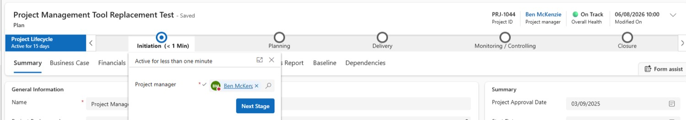
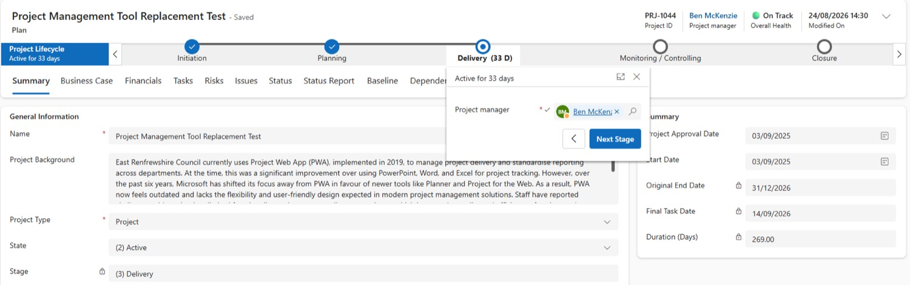
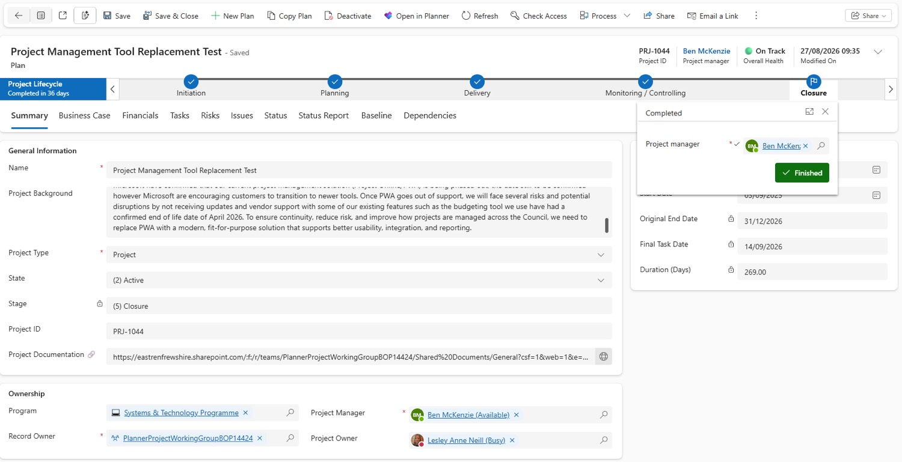

Run the project
Lifecycle & closing
Every plan carries a Project Lifecycle bar showing which of five stages it's in, so anyone can see at a glance where the project sits in its journey. You move it on yourself — and some things lock as you do. At the end, you close and deactivate the plan.
The five stages
The lifecycle bar sits at the top of every tab in your plan.
Initiation
After approval. Create the project record and finish gathering what's needed to define scope, objectives and requirements.
Planning
Resource allocation, detailed planning and any procurement needed before delivery can start.
Delivery
The main execution phase — planned work is carried out and deliverables produced.
Monitoring & Controlling
As deliverables are implemented: tracking progress, managing performance, making sure benefits and outcomes land.
Closure
All activity complete, objectives met, and ownership formally handed to the business or operational owner.
Move to the next stage
The lifecycle doesn't move on its own — update it as the project progresses.
- Select the dot where the lifecycle currently sits.
- Select Next Stage. The lifecycle moves on one stage.
The Stage field on the Summary tab updates automatically to match.
Project manager must be filled inThe stage pop-up shows the Project manager field, marked as required. If it's empty, add a name before moving on.
See the real screen — moving to the next stage

Original End Date locks at Delivery
You can change the Original End Date during Initiation and Planning. The moment the project moves into Delivery, it's locked for good.
Initiation
Planning
Delivery
Monitoring & Controlling
Closure
Get it right before DeliveryCheck your Original End Date is what you want to be measured against before you select Next Stage out of Planning.
See the real screen — the locked field in Delivery

Close a project
Closing makes the plan read-only and takes it off your Active Projects list.
Only close once the paperwork is approvedA Project Closure Report and an Executive Summary Closure Report must be completed and approved by the appropriate board first.
- Move the Project Lifecycle on to Closure. The Stage field now shows Closure.
- Select Finish. A Finished icon appears.
- Select Deactivate.
- Select Closed.
- Select Deactivate to confirm.
- The plan is now read-only. Select Plans in the left rail — it no longer shows in your active projects.
See the real screen — Finished, ready to deactivate

Find a closed project
- On the home page, select My Active Projects (the view name above the list).
- Choose Closed Projects.
- Select a project's name to open its read-only version.
Need to reopen one?Instructions for reopening a closed project will be in the full guidance notes, which the PMO is still to issue.